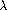

|
Our evaluator for Lisp will be implemented as a Lisp program. It may seem circular to think about evaluating Lisp programs using an evaluator that is itself implemented in Lisp. However, evaluation is a process, so it is appropriate to describe the evaluation process using Lisp, which, after all, is our tool for describing processes.3 An evaluator that is written in the same language that it evaluates is said to be metacircular.
The metacircular evaluator is essentially a Scheme formulation of the environment model of evaluation described in section 3.2. Recall that the model has two basic parts:
1. To evaluate a combination (a compound expression other than a special form), evaluate the subexpressions and then apply the value of the operator subexpression to the values of the operand subexpressions.
2. To apply a compound procedure to a set of arguments, evaluate the body of the procedure in a new environment. To construct this environment, extend the environment part of the procedure object by a frame in which the formal parameters of the procedure are bound to the arguments to which the procedure is applied.
These two rules describe the essence of the evaluation process, a basic cycle in which expressions to be evaluated in environments are reduced to procedures to be applied to arguments, which in turn are reduced to new expressions to be evaluated in new environments, and so on, until we get down to symbols, whose values are looked up in the environment, and to primitive procedures, which are applied directly (see figure 4.1).4 This evaluation cycle will be embodied by the interplay between the two critical procedures in the evaluator, eval and apply, which are described in section 4.1.1 (see figure 4.1).
The implementation of the evaluator will depend upon procedures that define the syntax of the expressions to be evaluated. We will use data abstraction to make the evaluator independent of the representation of the language. For example, rather than committing to a choice that an assignment is to be represented by a list beginning with the symbol set! we use an abstract predicate assignment? to test for an assignment, and we use abstract selectors assignment-variable and assignment-value to access the parts of an assignment. Implementation of expressions will be described in detail in section 4.1.2. There are also operations, described in section 4.1.3, that specify the representation of procedures and environments. For example, make-procedure constructs compound procedures, lookup-variable-value accesses the values of variables, and apply-primitive-procedure applies a primitive procedure to a given list of arguments.
The evaluation process can be described as the interplay between two procedures: eval and apply.
Eval takes as arguments an expression and an environment. It classifies the expression and directs its evaluation. Eval is structured as a case analysis of the syntactic type of the expression to be evaluated. In order to keep the procedure general, we express the determination of the type of an expression abstractly, making no commitment to any particular representation for the various types of expressions. Each type of expression has a predicate that tests for it and an abstract means for selecting its parts. This abstract syntax makes it easy to see how we can change the syntax of the language by using the same evaluator, but with a different collection of syntax procedures.
Here is the definition of eval:
(define (eval exp env)
(cond ((self-evaluating? exp) exp)
((variable? exp) (lookup-variable-value exp env))
((quoted? exp) (text-of-quotation exp))
((assignment? exp) (eval-assignment exp env))
((definition? exp) (eval-definition exp env))
((if? exp) (eval-if exp env))
((lambda? exp)
(make-procedure (lambda-parameters exp)
(lambda-body exp)
env))
((begin? exp)
(eval-sequence (begin-actions exp) env))
((cond? exp) (eval (cond->if exp) env))
((application? exp)
(apply (eval (operator exp) env)
(list-of-values (operands exp) env)))
(else
(error "Unknown expression type -- EVAL" exp))))
For clarity, eval has been implemented as a case analysis using cond. The disadvantage of this is that our procedure handles only a few distinguishable types of expressions, and no new ones can be defined without editing the definition of eval. In most Lisp implementations, dispatching on the type of an expression is done in a data-directed style. This allows a user to add new types of expressions that eval can distinguish, without modifying the definition of eval itself. (See exercise 4.3.)
Apply takes two arguments, a procedure and a list of arguments to which the procedure should be applied. Apply classifies procedures into two kinds: It calls apply-primitive-procedure to apply primitives; it applies compound procedures by sequentially evaluating the expressions that make up the body of the procedure. The environment for the evaluation of the body of a compound procedure is constructed by extending the base environment carried by the procedure to include a frame that binds the parameters of the procedure to the arguments to which the procedure is to be applied. Here is the definition of apply:
(define (apply procedure arguments)
(cond ((primitive-procedure? procedure)
(apply-primitive-procedure procedure arguments))
((compound-procedure? procedure)
(eval-sequence
(procedure-body procedure)
(extend-environment
(procedure-parameters procedure)
arguments
(procedure-environment procedure))))
(else
(error
"Unknown procedure type -- APPLY" procedure))))
When eval processes a procedure application, it uses list-of-values to produce the list of arguments to which the procedure is to be applied. List-of-values takes as an argument the operands of the combination. It evaluates each operand and returns a list of the corresponding values:5
(define (list-of-values exps env)
(if (no-operands? exps)
'()
(cons (eval (first-operand exps) env)
(list-of-values (rest-operands exps) env))))
Eval-if evaluates the predicate part of an if expression in the given environment. If the result is true, eval-if evaluates the consequent, otherwise it evaluates the alternative:
(define (eval-if exp env)
(if (true? (eval (if-predicate exp) env))
(eval (if-consequent exp) env)
(eval (if-alternative exp) env)))
The use of true? in eval-if highlights the issue of the connection between an implemented language and an implementation language. The if-predicate is evaluated in the language being implemented and thus yields a value in that language. The interpreter predicate true? translates that value into a value that can be tested by the if in the implementation language: The metacircular representation of truth might not be the same as that of the underlying Scheme.6
Eval-sequence is used by apply to evaluate the sequence of expressions in a procedure body and by eval to evaluate the sequence of expressions in a begin expression. It takes as arguments a sequence of expressions and an environment, and evaluates the expressions in the order in which they occur. The value returned is the value of the final expression.
(define (eval-sequence exps env)
(cond ((last-exp? exps) (eval (first-exp exps) env))
(else (eval (first-exp exps) env)
(eval-sequence (rest-exps exps) env))))
The following procedure handles assignments to variables. It calls eval to find the value to be assigned and transmits the variable and the resulting value to set-variable-value! to be installed in the designated environment.
(define (eval-assignment exp env)
(set-variable-value! (assignment-variable exp)
(eval (assignment-value exp) env)
env)
'ok)
Definitions of variables are handled in a similar manner.7
(define (eval-definition exp env)
(define-variable! (definition-variable exp)
(eval (definition-value exp) env)
env)
'ok)
We have chosen here to return the symbol ok as the value of an assignment or a definition.8
Exercise 4.1. Notice that we cannot tell whether the metacircular evaluator evaluates operands from left to right or from right to left. Its evaluation order is inherited from the underlying Lisp: If the arguments to cons in list-of-values are evaluated from left to right, then list-of-values will evaluate operands from left to right; and if the arguments to cons are evaluated from right to left, then list-of-values will evaluate operands from right to left.
Write a version of list-of-values that evaluates operands from left to right regardless of the order of evaluation in the underlying Lisp. Also write a version of list-of-values that evaluates operands from right to left.
The evaluator is reminiscent of the symbolic differentiation program discussed in section 2.3.2. Both programs operate on symbolic expressions. In both programs, the result of operating on a compound expression is determined by operating recursively on the pieces of the expression and combining the results in a way that depends on the type of the expression. In both programs we used data abstraction to decouple the general rules of operation from the details of how expressions are represented. In the differentiation program this meant that the same differentiation procedure could deal with algebraic expressions in prefix form, in infix form, or in some other form. For the evaluator, this means that the syntax of the language being evaluated is determined solely by the procedures that classify and extract pieces of expressions.
Here is the specification of the syntax of our language:
¤ The only self-evaluating items are numbers and strings:
(define (self-evaluating? exp)
(cond ((number? exp) true)
((string? exp) true)
(else false)))
¤ Variables are represented by symbols:
(define (variable? exp) (symbol? exp))
¤ Quotations have the form (quote <text-of-quotation>):9
(define (quoted? exp)
(tagged-list? exp 'quote))
(define (text-of-quotation exp) (cadr exp))
Quoted? is defined in terms of the procedure tagged-list?, which identifies lists beginning with a designated symbol:
(define (tagged-list? exp tag)
(if (pair? exp)
(eq? (car exp) tag)
false))
¤ Assignments have the form (set! <var> <value>):
(define (assignment? exp)
(tagged-list? exp 'set!))
(define (assignment-variable exp) (cadr exp))
(define (assignment-value exp) (caddr exp))
¤ Definitions have the form
(define <var> <value>)
or the form
(define (<var> <parameter1> ... <parametern>)
<body>)
The latter form (standard procedure definition) is syntactic sugar for
(define <var>
(lambda (<parameter1> ... <parametern>)
<body>))
The corresponding syntax procedures are the following:
(define (definition? exp)
(tagged-list? exp 'define))
(define (definition-variable exp)
(if (symbol? (cadr exp))
(cadr exp)
(caadr exp)))
(define (definition-value exp)
(if (symbol? (cadr exp))
(caddr exp)
(make-lambda (cdadr exp) ; formal parameters
(cddr exp)))) ; body
¤ Lambda expressions are lists that begin with the symbol lambda:
(define (lambda? exp) (tagged-list? exp 'lambda))
(define (lambda-parameters exp) (cadr exp))
(define (lambda-body exp) (cddr exp))
We also provide a constructor for lambda expressions, which is used by definition-value, above:
(define (make-lambda parameters body)
(cons 'lambda (cons parameters body)))
¤ Conditionals begin with if and have a predicate, a consequent, and an (optional) alternative. If the expression has no alternative part, we provide false as the alternative.10
(define (if? exp) (tagged-list? exp 'if))
(define (if-predicate exp) (cadr exp))
(define (if-consequent exp) (caddr exp))
(define (if-alternative exp)
(if (not (null? (cdddr exp)))
(cadddr exp)
'false))
We also provide a constructor for if expressions, to be used by cond->if to transform cond expressions into if expressions:
(define (make-if predicate consequent alternative)
(list 'if predicate consequent alternative))
¤ Begin packages a sequence of expressions into a single expression. We include syntax operations on begin expressions to extract the actual sequence from the begin expression, as well as selectors that return the first expression and the rest of the expressions in the sequence.11
(define (begin? exp) (tagged-list? exp 'begin))
(define (begin-actions exp) (cdr exp))
(define (last-exp? seq) (null? (cdr seq)))
(define (first-exp seq) (car seq))
(define (rest-exps seq) (cdr seq))
We also include a constructor sequence->exp (for use by cond->if) that transforms a sequence into a single expression, using begin if necessary:
(define (sequence->exp seq)
(cond ((null? seq) seq)
((last-exp? seq) (first-exp seq))
(else (make-begin seq))))
(define (make-begin seq) (cons 'begin seq))
¤ A procedure application is any compound expression that is not one of the above expression types. The car of the expression is the operator, and the cdr is the list of operands:
(define (application? exp) (pair? exp))
(define (operator exp) (car exp))
(define (operands exp) (cdr exp))
(define (no-operands? ops) (null? ops))
(define (first-operand ops) (car ops))
(define (rest-operands ops) (cdr ops))
Some special forms in our language can be defined in terms of expressions involving other special forms, rather than being implemented directly. One example is cond, which can be implemented as a nest of if expressions. For example, we can reduce the problem of evaluating the expression
(cond ((> x 0) x)
((= x 0) (display 'zero) 0)
(else (- x)))
to the problem of evaluating the following expression involving if and begin expressions:
(if (> x 0)
x
(if (= x 0)
(begin (display 'zero)
0)
(- x)))
Implementing the evaluation of cond in this way simplifies the evaluator because it reduces the number of special forms for which the evaluation process must be explicitly specified.
We include syntax procedures that extract the parts of a cond expression, and a procedure cond->if that transforms cond expressions into if expressions. A case analysis begins with cond and has a list of predicate-action clauses. A clause is an else clause if its predicate is the symbol else.12
(define (cond? exp) (tagged-list? exp 'cond))
(define (cond-clauses exp) (cdr exp))
(define (cond-else-clause? clause)
(eq? (cond-predicate clause) 'else))
(define (cond-predicate clause) (car clause))
(define (cond-actions clause) (cdr clause))
(define (cond->if exp)
(expand-clauses (cond-clauses exp)))
(define (expand-clauses clauses)
(if (null? clauses)
'false ; no else clause
(let ((first (car clauses))
(rest (cdr clauses)))
(if (cond-else-clause? first)
(if (null? rest)
(sequence->exp (cond-actions first))
(error "ELSE clause isn't last -- COND->IF"
clauses))
(make-if (cond-predicate first)
(sequence->exp (cond-actions first))
(expand-clauses rest))))))
Expressions (such as cond) that we choose to implement as syntactic transformations are called derived expressions. Let expressions are also derived expressions (see exercise 4.6).13
Exercise 4.2. Louis Reasoner plans to reorder the cond clauses in eval so that the clause for procedure applications appears before the clause for assignments. He argues that this will make the interpreter more efficient: Since programs usually contain more applications than assignments, definitions, and so on, his modified eval will usually check fewer clauses than the original eval before identifying the type of an expression.
a. What is wrong with Louis's plan? (Hint: What will Louis's evaluator do with the expression (define x 3)?)
b. Louis is upset that his plan didn't work. He is willing to go to any lengths to make his evaluator recognize procedure applications before it checks for most other kinds of expressions. Help him by changing the syntax of the evaluated language so that procedure applications start with call. For example, instead of (factorial 3) we will now have to write (call factorial 3) and instead of (+ 1 2) we will have to write (call + 1 2).
Exercise 4.3. Rewrite eval so that the dispatch is done in data-directed style. Compare this with the data-directed differentiation procedure of exercise 2.73. (You may use the car of a compound expression as the type of the expression, as is appropriate for the syntax implemented in this section.) .
Exercise 4.4. Recall the definitions of the special forms and and or from chapter 1:
Install and and or as new special forms for the evaluator by defining appropriate syntax procedures and evaluation procedures eval-and and eval-or. Alternatively, show how to implement and and or as derived expressions.
Exercise 4.5. Scheme allows an additional syntax for cond clauses, (<test> => <recipient>). If <test> evaluates to a true value, then <recipient> is evaluated. Its value must be a procedure of one argument; this procedure is then invoked on the value of the <test>, and the result is returned as the value of the cond expression. For example
(cond ((assoc 'b '((a 1) (b 2))) => cadr)
(else false))
returns 2. Modify the handling of cond so that it supports this extended syntax.
Exercise 4.6. Let expressions are derived expressions, because
(let ((<var1> <exp1>) ... (<varn> <expn>))
<body>)
is equivalent to
((lambda (<var1> ... <varn>)
<body>)
<exp1>
<expn>)
Implement a syntactic transformation let->combination that reduces evaluating let expressions to evaluating combinations of the type shown above, and add the appropriate clause to eval to handle let expressions.
Exercise 4.7. Let* is similar to let, except that the bindings of the let variables are performed sequentially from left to right, and each binding is made in an environment in which all of the preceding bindings are visible. For example
(let* ((x 3)
(y (+ x 2))
(z (+ x y 5)))
(* x z))
returns 39. Explain how a let* expression can be rewritten as a set of nested let expressions, and write a procedure let*->nested-lets that performs this transformation. If we have already implemented let (exercise 4.6) and we want to extend the evaluator to handle let*, is it sufficient to add a clause to eval whose action is
(eval (let*->nested-lets exp) env)
or must we explicitly expand let* in terms of non-derived expressions?
Exercise 4.8. ``Named let'' is a variant of let that has the form
(let <var> <bindings> <body>)
The <bindings> and <body> are just as in ordinary let, except that <var> is bound within <body> to a procedure whose body is <body> and whose parameters are the variables in the <bindings>. Thus, one can repeatedly execute the <body> by invoking the procedure named <var>. For example, the iterative Fibonacci procedure (section 1.2.2) can be rewritten using named let as follows:
(define (fib n)
(let fib-iter ((a 1)
(b 0)
(count n))
(if (= count 0)
b
(fib-iter (+ a b) a (- count 1)))))
Modify let->combination of exercise 4.6 to also support named let.
Exercise 4.9. Many languages support a variety of iteration constructs, such as do, for, while, and until. In Scheme, iterative processes can be expressed in terms of ordinary procedure calls, so special iteration constructs provide no essential gain in computational power. On the other hand, such constructs are often convenient. Design some iteration constructs, give examples of their use, and show how to implement them as derived expressions.
Exercise 4.10. By using data abstraction, we were able to write an eval procedure that is independent of the particular syntax of the language to be evaluated. To illustrate this, design and implement a new syntax for Scheme by modifying the procedures in this section, without changing eval or apply.
In addition to defining the external syntax of expressions, the evaluator implementation must also define the data structures that the evaluator manipulates internally, as part of the execution of a program, such as the representation of procedures and environments and the representation of true and false.
For conditionals, we accept anything to be true that is not the explicit false object.
(define (true? x)
(not (eq? x false)))
(define (false? x)
(eq? x false))
To handle primitives, we assume that we have available the following procedures:
These mechanisms for handling primitives are further described in section 4.1.4.
Compound procedures are constructed from parameters, procedure bodies, and environments using the constructor make-procedure:
(define (make-procedure parameters body env)
(list 'procedure parameters body env))
(define (compound-procedure? p)
(tagged-list? p 'procedure))
(define (procedure-parameters p) (cadr p))
(define (procedure-body p) (caddr p))
(define (procedure-environment p) (cadddr p))
The evaluator needs operations for manipulating environments. As explained in section 3.2, an environment is a sequence of frames, where each frame is a table of bindings that associate variables with their corresponding values. We use the following operations for manipulating environments:
To implement these operations we represent an environment as a list of frames. The enclosing environment of an environment is the cdr of the list. The empty environment is simply the empty list.
(define (enclosing-environment env) (cdr env))
(define (first-frame env) (car env))
(define the-empty-environment '())
Each frame of an environment is represented as a pair of lists: a list of the variables bound in that frame and a list of the associated values.14
(define (make-frame variables values)
(cons variables values))
(define (frame-variables frame) (car frame))
(define (frame-values frame) (cdr frame))
(define (add-binding-to-frame! var val frame)
(set-car! frame (cons var (car frame)))
(set-cdr! frame (cons val (cdr frame))))
To extend an environment by a new frame that associates variables with values, we make a frame consisting of the list of variables and the list of values, and we adjoin this to the environment. We signal an error if the number of variables does not match the number of values.
(define (extend-environment vars vals base-env)
(if (= (length vars) (length vals))
(cons (make-frame vars vals) base-env)
(if (< (length vars) (length vals))
(error "Too many arguments supplied" vars vals)
(error "Too few arguments supplied" vars vals))))
To look up a variable in an environment, we scan the list of variables in the first frame. If we find the desired variable, we return the corresponding element in the list of values. If we do not find the variable in the current frame, we search the enclosing environment, and so on. If we reach the empty environment, we signal an ``unbound variable'' error.
(define (lookup-variable-value var env)
(define (env-loop env)
(define (scan vars vals)
(cond ((null? vars)
(env-loop (enclosing-environment env)))
((eq? var (car vars))
(car vals))
(else (scan (cdr vars) (cdr vals)))))
(if (eq? env the-empty-environment)
(error "Unbound variable" var)
(let ((frame (first-frame env)))
(scan (frame-variables frame)
(frame-values frame)))))
(env-loop env))
To set a variable to a new value in a specified environment, we scan for the variable, just as in lookup-variable-value, and change the corresponding value when we find it.
(define (set-variable-value! var val env)
(define (env-loop env)
(define (scan vars vals)
(cond ((null? vars)
(env-loop (enclosing-environment env)))
((eq? var (car vars))
(set-car! vals val))
(else (scan (cdr vars) (cdr vals)))))
(if (eq? env the-empty-environment)
(error "Unbound variable -- SET!" var)
(let ((frame (first-frame env)))
(scan (frame-variables frame)
(frame-values frame)))))
(env-loop env))
To define a variable, we search the first frame for a binding for the variable, and change the binding if it exists (just as in set-variable-value!). If no such binding exists, we adjoin one to the first frame.
(define (define-variable! var val env)
(let ((frame (first-frame env)))
(define (scan vars vals)
(cond ((null? vars)
(add-binding-to-frame! var val frame))
((eq? var (car vars))
(set-car! vals val))
(else (scan (cdr vars) (cdr vals)))))
(scan (frame-variables frame)
(frame-values frame))))
The method described here is only one of many plausible ways to represent environments. Since we used data abstraction to isolate the rest of the evaluator from the detailed choice of representation, we could change the environment representation if we wanted to. (See exercise 4.11.) In a production-quality Lisp system, the speed of the evaluator's environment operations -- especially that of variable lookup -- has a major impact on the performance of the system. The representation described here, although conceptually simple, is not efficient and would not ordinarily be used in a production system.15
Exercise 4.11. Instead of representing a frame as a pair of lists, we can represent a frame as a list of bindings, where each binding is a name-value pair. Rewrite the environment operations to use this alternative representation.
Exercise 4.12. The procedures set-variable-value!, define-variable!, and lookup-variable-value can be expressed in terms of more abstract procedures for traversing the environment structure. Define abstractions that capture the common patterns and redefine the three procedures in terms of these abstractions.
Exercise 4.13. Scheme allows us to create new bindings for variables by means of define, but provides no way to get rid of bindings. Implement for the evaluator a special form make-unbound! that removes the binding of a given symbol from the environment in which the make-unbound! expression is evaluated. This problem is not completely specified. For example, should we remove only the binding in the first frame of the environment? Complete the specification and justify any choices you make.
Given the evaluator, we have in our hands a description (expressed in Lisp) of the process by which Lisp expressions are evaluated. One advantage of expressing the evaluator as a program is that we can run the program. This gives us, running within Lisp, a working model of how Lisp itself evaluates expressions. This can serve as a framework for experimenting with evaluation rules, as we shall do later in this chapter.
Our evaluator program reduces expressions ultimately to the application of primitive procedures. Therefore, all that we need to run the evaluator is to create a mechanism that calls on the underlying Lisp system to model the application of primitive procedures.
There must be a binding for each primitive procedure name, so that when eval evaluates the operator of an application of a primitive, it will find an object to pass to apply. We thus set up a global environment that associates unique objects with the names of the primitive procedures that can appear in the expressions we will be evaluating. The global environment also includes bindings for the symbols true and false, so that they can be used as variables in expressions to be evaluated.
(define (setup-environment)
(let ((initial-env
(extend-environment (primitive-procedure-names)
(primitive-procedure-objects)
the-empty-environment)))
(define-variable! 'true true initial-env)
(define-variable! 'false false initial-env)
initial-env))
(define the-global-environment (setup-environment))
It does not matter how we represent the primitive procedure objects, so long as apply can identify and apply them by using the procedures primitive-procedure? and apply-primitive-procedure. We have chosen to represent a primitive procedure as a list beginning with the symbol primitive and containing a procedure in the underlying Lisp that implements that primitive.
(define (primitive-procedure? proc)
(tagged-list? proc 'primitive))
(define (primitive-implementation proc) (cadr proc))
Setup-environment will get the primitive names and implementation procedures from a list:16
(define primitive-procedures
(list (list 'car car)
(list 'cdr cdr)
(list 'cons cons)
(list 'null? null?)
<more primitives>
))
(define (primitive-procedure-names)
(map car
primitive-procedures))
(define (primitive-procedure-objects)
(map (lambda (proc) (list 'primitive (cadr proc)))
primitive-procedures))
To apply a primitive procedure, we simply apply the implementation procedure to the arguments, using the underlying Lisp system:17
(define (apply-primitive-procedure proc args)
(apply-in-underlying-scheme
(primitive-implementation proc) args))
For convenience in running the metacircular evaluator, we provide a driver loop that models the read-eval-print loop of the underlying Lisp system. It prints a prompt, reads an input expression, evaluates this expression in the global environment, and prints the result. We precede each printed result by an output prompt so as to distinguish the value of the expression from other output that may be printed.18
(define input-prompt ";;; M-Eval input:")
(define output-prompt ";;; M-Eval value:")
(define (driver-loop)
(prompt-for-input input-prompt)
(let ((input (read)))
(let ((output (eval input the-global-environment)))
(announce-output output-prompt)
(user-print output)))
(driver-loop))
(define (prompt-for-input string)
(newline) (newline) (display string) (newline))
(define (announce-output string)
(newline) (display string) (newline))
We use a special printing procedure, user-print, to avoid printing the environment part of a compound procedure, which may be a very long list (or may even contain cycles).
(define (user-print object)
(if (compound-procedure? object)
(display (list 'compound-procedure
(procedure-parameters object)
(procedure-body object)
'<procedure-env>))
(display object)))
Now all we need to do to run the evaluator is to initialize the global environment and start the driver loop. Here is a sample interaction:
(define the-global-environment (setup-environment))
(driver-loop)
;;; M-Eval input:
(define (append x y)
(if (null? x)
y
(cons (car x)
(append (cdr x) y))))
;;; M-Eval value:
ok
;;; M-Eval input:
(append '(a b c) '(d e f))
;;; M-Eval value:
(a b c d e f)
Exercise 4.14. Eva Lu Ator and Louis Reasoner are each experimenting with the metacircular evaluator. Eva types in the definition of map, and runs some test programs that use it. They work fine. Louis, in contrast, has installed the system version of map as a primitive for the metacircular evaluator. When he tries it, things go terribly wrong. Explain why Louis's map fails even though Eva's works.
In thinking about a Lisp program that evaluates Lisp expressions, an analogy might be helpful. One operational view of the meaning of a program is that a program is a description of an abstract (perhaps infinitely large) machine. For example, consider the familiar program to compute factorials:
(define (factorial n)
(if (= n 1)
1
(* (factorial (- n 1)) n)))
We may regard this program as the description of a machine containing parts that decrement, multiply, and test for equality, together with a two-position switch and another factorial machine. (The factorial machine is infinite because it contains another factorial machine within it.) Figure 4.2 is a flow diagram for the factorial machine, showing how the parts are wired together.

|
In a similar way, we can regard the evaluator as a very special machine that takes as input a description of a machine. Given this input, the evaluator configures itself to emulate the machine described. For example, if we feed our evaluator the definition of factorial, as shown in figure 4.3, the evaluator will be able to compute factorials.

|
From this perspective, our evaluator is seen to be a universal machine. It mimics other machines when these are described as Lisp programs.19 This is striking. Try to imagine an analogous evaluator for electrical circuits. This would be a circuit that takes as input a signal encoding the plans for some other circuit, such as a filter. Given this input, the circuit evaluator would then behave like a filter with the same description. Such a universal electrical circuit is almost unimaginably complex. It is remarkable that the program evaluator is a rather simple program.20
Another striking aspect of the evaluator is that it acts as a bridge between the data objects that are manipulated by our programming language and the programming language itself. Imagine that the evaluator program (implemented in Lisp) is running, and that a user is typing expressions to the evaluator and observing the results. From the perspective of the user, an input expression such as (* x x) is an expression in the programming language, which the evaluator should execute. From the perspective of the evaluator, however, the expression is simply a list (in this case, a list of three symbols: *, x, and x) that is to be manipulated according to a well-defined set of rules.
That the user's programs are the evaluator's data need not be a source of confusion. In fact, it is sometimes convenient to ignore this distinction, and to give the user the ability to explicitly evaluate a data object as a Lisp expression, by making eval available for use in programs. Many Lisp dialects provide a primitive eval procedure that takes as arguments an expression and an environment and evaluates the expression relative to the environment.21 Thus,
(eval '(* 5 5) user-initial-environment)
and
(eval (cons '* (list 5 5)) user-initial-environment)
will both return 25.22
Exercise 4.15. Given a one-argument procedure p and an object a, p is said to ``halt'' on a if evaluating the expression (p a) returns a value (as opposed to terminating with an error message or running forever). Show that it is impossible to write a procedure halts? that correctly determines whether p halts on a for any procedure p and object a. Use the following reasoning: If you had such a procedure halts?, you could implement the following program:
(define (run-forever) (run-forever))
(define (try p)
(if (halts? p p)
(run-forever)
'halted))
Now consider evaluating the expression (try try) and show that any possible outcome (either halting or running forever) violates the intended behavior of halts?.23
Our environment model of evaluation and our metacircular evaluator execute definitions in sequence, extending the environment frame one definition at a time. This is particularly convenient for interactive program development, in which the programmer needs to freely mix the application of procedures with the definition of new procedures. However, if we think carefully about the internal definitions used to implement block structure (introduced in section 1.1.8), we will find that name-by-name extension of the environment may not be the best way to define local variables.
Consider a procedure with internal definitions, such as
(define (f x)
(define (even? n)
(if (= n 0)
true
(odd? (- n 1))))
(define (odd? n)
(if (= n 0)
false
(even? (- n 1))))
<rest of body of f>)
Our intention here is that the name odd? in the body of the procedure even? should refer to the procedure odd? that is defined after even?. The scope of the name odd? is the entire body of f, not just the portion of the body of f starting at the point where the define for odd? occurs. Indeed, when we consider that odd? is itself defined in terms of even? -- so that even? and odd? are mutually recursive procedures -- we see that the only satisfactory interpretation of the two defines is to regard them as if the names even? and odd? were being added to the environment simultaneously. More generally, in block structure, the scope of a local name is the entire procedure body in which the define is evaluated.
As it happens, our interpreter will evaluate calls to f correctly, but for an ``accidental'' reason: Since the definitions of the internal procedures come first, no calls to these procedures will be evaluated until all of them have been defined. Hence, odd? will have been defined by the time even? is executed. In fact, our sequential evaluation mechanism will give the same result as a mechanism that directly implements simultaneous definition for any procedure in which the internal definitions come first in a body and evaluation of the value expressions for the defined variables doesn't actually use any of the defined variables. (For an example of a procedure that doesn't obey these restrictions, so that sequential definition isn't equivalent to simultaneous definition, see exercise 4.19.)24
There is, however, a simple way to treat definitions so that internally defined names have truly simultaneous scope -- just create all local variables that will be in the current environment before evaluating any of the value expressions. One way to do this is by a syntax transformation on lambda expressions. Before evaluating the body of a lambda expression, we ``scan out'' and eliminate all the internal definitions in the body. The internally defined variables will be created with a let and then set to their values by assignment. For example, the procedure
(lambda <vars>
(define u <e1>)
(define v <e2>)
<e3>)
would be transformed into
(lambda <vars>
(let ((u '*unassigned*)
(v '*unassigned*))
(set! u <e1>)
(set! v <e2>)
<e3>))
where *unassigned* is a special symbol that causes looking up a variable to signal an error if an attempt is made to use the value of the not-yet-assigned variable.
An alternative strategy for scanning out internal definitions is shown in exercise 4.18. Unlike the transformation shown above, this enforces the restriction that the defined variables' values can be evaluated without using any of the variables' values.25
Exercise 4.16. In this exercise we implement the method just described for interpreting internal definitions. We assume that the evaluator supports let (see exercise 4.6).
a. Change lookup-variable-value (section 4.1.3) to signal an error if the value it finds is the symbol *unassigned*.
b. Write a procedure scan-out-defines that takes a procedure body and returns an equivalent one that has no internal definitions, by making the transformation described above.
c. Install scan-out-defines in the interpreter, either in make-procedure or in procedure-body (see section 4.1.3). Which place is better? Why?
Exercise 4.17. Draw diagrams of the environment in effect when evaluating the expression <e3> in the procedure in the text, comparing how this will be structured when definitions are interpreted sequentially with how it will be structured if definitions are scanned out as described. Why is there an extra frame in the transformed program? Explain why this difference in environment structure can never make a difference in the behavior of a correct program. Design a way to make the interpreter implement the ``simultaneous'' scope rule for internal definitions without constructing the extra frame.
Exercise 4.18. Consider an alternative strategy for scanning out definitions that translates the example in the text to
(lambda <vars>
(let ((u '*unassigned*)
(v '*unassigned*))
(let ((a <e1>)
(b <e2>))
(set! u a)
(set! v b))
<e3>))
Here a and b are meant to represent new variable names, created by the interpreter, that do not appear in the user's program. Consider the solve procedure from section 3.5.4:
(define (solve f y0 dt)
(define y (integral (delay dy) y0 dt))
(define dy (stream-map f y))
y)
Will this procedure work if internal definitions are scanned out as shown in this exercise? What if they are scanned out as shown in the text? Explain.
Exercise 4.19. Ben Bitdiddle, Alyssa P. Hacker, and Eva Lu Ator are arguing about the desired result of evaluating the expression
(let ((a 1))
(define (f x)
(define b (+ a x))
(define a 5)
(+ a b))
(f 10))
Ben asserts that the result should be obtained using the sequential rule for define: b is defined to be 11, then a is defined to be 5, so the result is 16. Alyssa objects that mutual recursion requires the simultaneous scope rule for internal procedure definitions, and that it is unreasonable to treat procedure names differently from other names. Thus, she argues for the mechanism implemented in exercise 4.16. This would lead to a being unassigned at the time that the value for b is to be computed. Hence, in Alyssa's view the procedure should produce an error. Eva has a third opinion. She says that if the definitions of a and b are truly meant to be simultaneous, then the value 5 for a should be used in evaluating b. Hence, in Eva's view a should be 5, b should be 15, and the result should be 20. Which (if any) of these viewpoints do you support? Can you devise a way to implement internal definitions so that they behave as Eva prefers?26
Exercise 4.20. Because internal definitions look sequential but are actually simultaneous, some people prefer to avoid them entirely, and use the special form letrec instead. Letrec looks like let, so it is not surprising that the variables it binds are bound simultaneously and have the same scope as each other. The sample procedure f above can be written without internal definitions, but with exactly the same meaning, as
(define (f x)
(letrec ((even?
(lambda (n)
(if (= n 0)
true
(odd? (- n 1)))))
(odd?
(lambda (n)
(if (= n 0)
false
(even? (- n 1))))))
<rest of body of f>))
Letrec expressions, which have the form
(letrec ((<var1> <exp1>) ... (<varn> <expn>))
<body>)
are a variation on let in which the expressions <expk> that provide the initial values for the variables <vark> are evaluated in an environment that includes all the letrec bindings. This permits recursion in the bindings, such as the mutual recursion of even? and odd? in the example above, or the evaluation of 10 factorial with
(letrec ((fact
(lambda (n)
(if (= n 1)
1
(* n (fact (- n 1)))))))
(fact 10))
a. Implement letrec as a derived expression, by transforming a letrec expression into a let expression as shown in the text above or in exercise 4.18. That is, the letrec variables should be created with a let and then be assigned their values with set!.
b. Louis Reasoner is confused by all this fuss about internal definitions. The way he sees it, if you don't like to use define inside a procedure, you can just use let. Illustrate what is loose about his reasoning by drawing an environment diagram that shows the environment in which the <rest of body of f> is evaluated during evaluation of the expression (f 5), with f defined as in this exercise. Draw an environment diagram for the same evaluation, but with let in place of letrec in the definition of f.
Exercise 4.21. Amazingly, Louis's intuition in exercise 4.20 is correct. It is indeed possible to specify recursive procedures without using letrec (or even define), although the method for accomplishing this is much more subtle than Louis imagined. The following expression computes 10 factorial by applying a recursive factorial procedure:27
((lambda (n)
((lambda (fact)
(fact fact n))
(lambda (ft k)
(if (= k 1)
1
(* k (ft ft (- k 1)))))))
10)
a. Check (by evaluating the expression) that this really does compute factorials. Devise an analogous expression for computing Fibonacci numbers.
b. Consider the following procedure, which includes mutually recursive internal definitions:
(define (f x)
(define (even? n)
(if (= n 0)
true
(odd? (- n 1))))
(define (odd? n)
(if (= n 0)
false
(even? (- n 1))))
(even? x))
Fill in the missing expressions to complete an alternative definition of f, which uses neither internal definitions nor letrec:
(define (f x)
((lambda (even? odd?)
(even? even? odd? x))
(lambda (ev? od? n)
(if (= n 0) true (od? <??> <??> <??>)))
(lambda (ev? od? n)
(if (= n 0) false (ev? <??> <??> <??>)))))
The evaluator implemented above is simple, but it is very inefficient, because the syntactic analysis of expressions is interleaved with their execution. Thus if a program is executed many times, its syntax is analyzed many times. Consider, for example, evaluating (factorial 4) using the following definition of factorial:
(define (factorial n)
(if (= n 1)
1
(* (factorial (- n 1)) n)))
Each time factorial is called, the evaluator must determine that the body is an if expression and extract the predicate. Only then can it evaluate the predicate and dispatch on its value. Each time it evaluates the expression (* (factorial (- n 1)) n), or the subexpressions (factorial (- n 1)) and (- n 1), the evaluator must perform the case analysis in eval to determine that the expression is an application, and must extract its operator and operands. This analysis is expensive. Performing it repeatedly is wasteful.
We can transform the evaluator to be significantly more efficient by arranging things so that syntactic analysis is performed only once.28 We split eval, which takes an expression and an environment, into two parts. The procedure analyze takes only the expression. It performs the syntactic analysis and returns a new procedure, the execution procedure, that encapsulates the work to be done in executing the analyzed expression. The execution procedure takes an environment as its argument and completes the evaluation. This saves work because analyze will be called only once on an expression, while the execution procedure may be called many times.
With the separation into analysis and execution, eval now becomes
(define (eval exp env)
((analyze exp) env))
The result of calling analyze is the execution procedure to be applied to the environment. The analyze procedure is the same case analysis as performed by the original eval of section 4.1.1, except that the procedures to which we dispatch perform only analysis, not full evaluation:
(define (analyze exp)
(cond ((self-evaluating? exp)
(analyze-self-evaluating exp))
((quoted? exp) (analyze-quoted exp))
((variable? exp) (analyze-variable exp))
((assignment? exp) (analyze-assignment exp))
((definition? exp) (analyze-definition exp))
((if? exp) (analyze-if exp))
((lambda? exp) (analyze-lambda exp))
((begin? exp) (analyze-sequence (begin-actions exp)))
((cond? exp) (analyze (cond->if exp)))
((application? exp) (analyze-application exp))
(else
(error "Unknown expression type -- ANALYZE" exp))))
Here is the simplest syntactic analysis procedure, which handles self-evaluating expressions. It returns an execution procedure that ignores its environment argument and just returns the expression:
(define (analyze-self-evaluating exp)
(lambda (env) exp))
For a quoted expression, we can gain a little efficiency by extracting the text of the quotation only once, in the analysis phase, rather than in the execution phase.
(define (analyze-quoted exp)
(let ((qval (text-of-quotation exp)))
(lambda (env) qval)))
Looking up a variable value must still be done in the execution phase, since this depends upon knowing the environment.29
(define (analyze-variable exp)
(lambda (env) (lookup-variable-value exp env)))
Analyze-assignment also must defer actually setting the variable until the execution, when the environment has been supplied. However, the fact that the assignment-value expression can be analyzed (recursively) during analysis is a major gain in efficiency, because the assignment-value expression will now be analyzed only once. The same holds true for definitions.
(define (analyze-assignment exp)
(let ((var (assignment-variable exp))
(vproc (analyze (assignment-value exp))))
(lambda (env)
(set-variable-value! var (vproc env) env)
'ok)))
(define (analyze-definition exp)
(let ((var (definition-variable exp))
(vproc (analyze (definition-value exp))))
(lambda (env)
(define-variable! var (vproc env) env)
'ok)))
For if expressions, we extract and analyze the predicate, consequent, and alternative at analysis time.
(define (analyze-if exp)
(let ((pproc (analyze (if-predicate exp)))
(cproc (analyze (if-consequent exp)))
(aproc (analyze (if-alternative exp))))
(lambda (env)
(if (true? (pproc env))
(cproc env)
(aproc env)))))
Analyzing a lambda expression also achieves a major gain in efficiency: We analyze the lambda body only once, even though procedures resulting from evaluation of the lambda may be applied many times.
(define (analyze-lambda exp)
(let ((vars (lambda-parameters exp))
(bproc (analyze-sequence (lambda-body exp))))
(lambda (env) (make-procedure vars bproc env))))
Analysis of a sequence of expressions (as in a begin or the body of a lambda expression) is more involved.30 Each expression in the sequence is analyzed, yielding an execution procedure. These execution procedures are combined to produce an execution procedure that takes an environment as argument and sequentially calls each individual execution procedure with the environment as argument.
(define (analyze-sequence exps)
(define (sequentially proc1 proc2)
(lambda (env) (proc1 env) (proc2 env)))
(define (loop first-proc rest-procs)
(if (null? rest-procs)
first-proc
(loop (sequentially first-proc (car rest-procs))
(cdr rest-procs))))
(let ((procs (map analyze exps)))
(if (null? procs)
(error "Empty sequence -- ANALYZE"))
(loop (car procs) (cdr procs))))
To analyze an application, we analyze the operator and operands and construct an execution procedure that calls the operator execution procedure (to obtain the actual procedure to be applied) and the operand execution procedures (to obtain the actual arguments). We then pass these to execute-application, which is the analog of apply in section 4.1.1. Execute-application differs from apply in that the procedure body for a compound procedure has already been analyzed, so there is no need to do further analysis. Instead, we just call the execution procedure for the body on the extended environment.
(define (analyze-application exp)
(let ((fproc (analyze (operator exp)))
(aprocs (map analyze (operands exp))))
(lambda (env)
(execute-application (fproc env)
(map (lambda (aproc) (aproc env))
aprocs)))))
(define (execute-application proc args)
(cond ((primitive-procedure? proc)
(apply-primitive-procedure proc args))
((compound-procedure? proc)
((procedure-body proc)
(extend-environment (procedure-parameters proc)
args
(procedure-environment proc))))
(else
(error
"Unknown procedure type -- EXECUTE-APPLICATION"
proc))))
Our new evaluator uses the same data structures, syntax procedures, and run-time support procedures as in sections 4.1.2, 4.1.3, and 4.1.4.
Exercise 4.22. Extend the evaluator in this section to support the special form let. (See exercise 4.6.)
Exercise 4.23. Alyssa P. Hacker doesn't understand why analyze-sequence needs to be so complicated. All the other analysis procedures are straightforward transformations of the corresponding evaluation procedures (or eval clauses) in section 4.1.1. She expected analyze-sequence to look like this:
(define (analyze-sequence exps)
(define (execute-sequence procs env)
(cond ((null? (cdr procs)) ((car procs) env))
(else ((car procs) env)
(execute-sequence (cdr procs) env))))
(let ((procs (map analyze exps)))
(if (null? procs)
(error "Empty sequence -- ANALYZE"))
(lambda (env) (execute-sequence procs env))))
Eva Lu Ator explains to Alyssa that the version in the text does more of the work of evaluating a sequence at analysis time. Alyssa's sequence-execution procedure, rather than having the calls to the individual execution procedures built in, loops through the procedures in order to call them: In effect, although the individual expressions in the sequence have been analyzed, the sequence itself has not been.
Compare the two versions of analyze-sequence. For example, consider the common case (typical of procedure bodies) where the sequence has just one expression. What work will the execution procedure produced by Alyssa's program do? What about the execution procedure produced by the program in the text above? How do the two versions compare for a sequence with two expressions?
Exercise 4.24. Design and carry out some experiments to compare the speed of the original metacircular evaluator with the version in this section. Use your results to estimate the fraction of time that is spent in analysis versus execution for various procedures.
3 Even so, there will remain important aspects of the evaluation process that are not elucidated by our evaluator. The most important of these are the detailed mechanisms by which procedures call other procedures and return values to their callers. We will address these issues in chapter 5, where we take a closer look at the evaluation process by implementing the evaluator as a simple register machine.
4 If we grant ourselves the ability to apply primitives, then what remains for us to implement in the evaluator? The job of the evaluator is not to specify the primitives of the language, but rather to provide the connective tissue -- the means of combination and the means of abstraction -- that binds a collection of primitives to form a language. Specifically:
5 We could have simplified the application? clause in eval by using map (and stipulating that operands returns a list) rather than writing an explicit list-of-values procedure. We chose not to use map here to emphasize the fact that the evaluator can be implemented without any use of higher-order procedures (and thus could be written in a language that doesn't have higher-order procedures), even though the language that it supports will include higher-order procedures.
6 In this case, the language being implemented and the implementation language are the same. Contemplation of the meaning of true? here yields expansion of consciousness without the abuse of substance.
7 This implementation of define ignores a subtle issue in the handling of internal definitions, although it works correctly in most cases. We will see what the problem is and how to solve it in section 4.1.6.
8 As we said when we introduced define and set!, these values are implementation-dependent in Scheme -- that is, the implementor can choose what value to return.
9 As mentioned in section 2.3.1, the evaluator sees a quoted expression as a list beginning with quote, even if the expression is typed with the quotation mark. For example, the expression 'a would be seen by the evaluator as (quote a). See exercise 2.55.
10 The value of an if expression when the predicate is false and there is no alternative is unspecified in Scheme; we have chosen here to make it false. We will support the use of the variables true and false in expressions to be evaluated by binding them in the global environment. See section 4.1.4.
11 These selectors for a list of expressions -- and the corresponding ones for a list of operands -- are not intended as a data abstraction. They are introduced as mnemonic names for the basic list operations in order to make it easier to understand the explicit-control evaluator in section 5.4.
12 The value of a cond expression when all the predicates are false and there is no else clause is unspecified in Scheme; we have chosen here to make it false.
13 Practical Lisp systems provide a mechanism that allows a user to add new derived expressions and specify their implementation as syntactic transformations without modifying the evaluator. Such a user-defined transformation is called a macro. Although it is easy to add an elementary mechanism for defining macros, the resulting language has subtle name-conflict problems. There has been much research on mechanisms for macro definition that do not cause these difficulties. See, for example, Kohlbecker 1986, Clinger and Rees 1991, and Hanson 1991.
14 Frames are not really a data abstraction in the following code: Set-variable-value! and define-variable! use set-car! to directly modify the values in a frame. The purpose of the frame procedures is to make the environment-manipulation procedures easy to read.
15 The drawback of this representation (as well as the variant in exercise 4.11) is that the evaluator may have to search through many frames in order to find the binding for a given variable. (Such an approach is referred to as deep binding.) One way to avoid this inefficiency is to make use of a strategy called lexical addressing, which will be discussed in section 5.5.6.
16 Any procedure defined in the underlying Lisp can be used as a primitive for the metacircular evaluator. The name of a primitive installed in the evaluator need not be the same as the name of its implementation in the underlying Lisp; the names are the same here because the metacircular evaluator implements Scheme itself. Thus, for example, we could put (list 'first car) or (list 'square (lambda (x) (* x x))) in the list of primitive-procedures.
17 Apply-in-underlying-scheme is the apply procedure we have used in earlier chapters. The metacircular evaluator's apply procedure (section 4.1.1) models the working of this primitive. Having two different things called apply leads to a technical problem in running the metacircular evaluator, because defining the metacircular evaluator's apply will mask the definition of the primitive. One way around this is to rename the metacircular apply to avoid conflict with the name of the primitive procedure. We have assumed instead that we have saved a reference to the underlying apply by doing
(define apply-in-underlying-scheme apply)
before defining the metacircular apply. This allows us to access the original version of apply under a different name.
18 The primitive procedure read waits for input from the user, and returns the next complete expression that is typed. For example, if the user types (+ 23 x), read returns a three-element list containing the symbol +, the number 23, and the symbol x. If the user types 'x, read returns a two-element list containing the symbol quote and the symbol x.
19 The fact that the machines are described in Lisp is inessential. If we give our evaluator a Lisp program that behaves as an evaluator for some other language, say C, the Lisp evaluator will emulate the C evaluator, which in turn can emulate any machine described as a C program. Similarly, writing a Lisp evaluator in C produces a C program that can execute any Lisp program. The deep idea here is that any evaluator can emulate any other. Thus, the notion of ``what can in principle be computed'' (ignoring practicalities of time and memory required) is independent of the language or the computer, and instead reflects an underlying notion of computability. This was first demonstrated in a clear way by Alan M. Turing (1912-1954), whose 1936 paper laid the foundations for theoretical computer science. In the paper, Turing presented a simple computational model -- now known as a Turing machine -- and argued that any ``effective process'' can be formulated as a program for such a machine. (This argument is known as the Church-Turing thesis.) Turing then implemented a universal machine, i.e., a Turing machine that behaves as an evaluator for Turing-machine programs. He used this framework to demonstrate that there are well-posed problems that cannot be computed by Turing machines (see exercise 4.15), and so by implication cannot be formulated as ``effective processes.'' Turing went on to make fundamental contributions to practical computer science as well. For example, he invented the idea of structuring programs using general-purpose subroutines. See Hodges 1983 for a biography of Turing.
20 Some people find it counterintuitive that an evaluator, which is implemented by a relatively simple procedure, can emulate programs that are more complex than the evaluator itself. The existence of a universal evaluator machine is a deep and wonderful property of computation. Recursion theory, a branch of mathematical logic, is concerned with logical limits of computation. Douglas Hofstadter's beautiful book Gödel, Escher, Bach (1979) explores some of these ideas.
21 Warning: This eval primitive is not identical to the eval procedure we implemented in section 4.1.1, because it uses actual Scheme environments rather than the sample environment structures we built in section 4.1.3. These actual environments cannot be manipulated by the user as ordinary lists; they must be accessed via eval or other special operations. Similarly, the apply primitive we saw earlier is not identical to the metacircular apply, because it uses actual Scheme procedures rather than the procedure objects we constructed in sections 4.1.3 and 4.1.4.
22 The MIT implementation of Scheme includes eval, as well as a symbol user-initial-environment that is bound to the initial environment in which the user's input expressions are evaluated.
23 Although we stipulated that halts? is given a procedure object, notice that this reasoning still applies even if halts? can gain access to the procedure's text and its environment. This is Turing's celebrated Halting Theorem, which gave the first clear example of a non-computable problem, i.e., a well-posed task that cannot be carried out as a computational procedure.
24 Wanting programs to not depend on this evaluation mechanism is the reason for the ``management is not responsible'' remark in footnote 28 of chapter 1. By insisting that internal definitions come first and do not use each other while the definitions are being evaluated, the IEEE standard for Scheme leaves implementors some choice in the mechanism used to evaluate these definitions. The choice of one evaluation rule rather than another here may seem like a small issue, affecting only the interpretation of ``badly formed'' programs. However, we will see in section 5.5.6 that moving to a model of simultaneous scoping for internal definitions avoids some nasty difficulties that would otherwise arise in implementing a compiler.
25 The IEEE standard for Scheme allows for different implementation strategies by specifying that it is up to the programmer to obey this restriction, not up to the implementation to enforce it. Some Scheme implementations, including MIT Scheme, use the transformation shown above. Thus, some programs that don't obey this restriction will in fact run in such implementations.
26 The MIT implementors of Scheme support Alyssa on the following grounds: Eva is in principle correct -- the definitions should be regarded as simultaneous. But it seems difficult to implement a general, efficient mechanism that does what Eva requires. In the absence of such a mechanism, it is better to generate an error in the difficult cases of simultaneous definitions (Alyssa's notion) than to produce an incorrect answer (as Ben would have it).
27 This example illustrates a programming trick for formulating recursive procedures without using define. The most general trick of this sort is the Y operator, which can be used to give a ``pure -calculus'' implementation of recursion. (See Stoy 1977 for details on the lambda calculus, and Gabriel 1988 for an exposition of the Y operator in Scheme.)
28 This technique is an integral part of the compilation process, which we shall discuss in chapter 5. Jonathan Rees wrote a Scheme interpreter like this in about 1982 for the T project (Rees and Adams 1982). Marc Feeley (1986) (see also Feeley and Lapalme 1987) independently invented this technique in his master's thesis.
29 There is, however, an important part of the variable search that can be done as part of the syntactic analysis. As we will show in section 5.5.6, one can determine the position in the environment structure where the value of the variable will be found, thus obviating the need to scan the environment for the entry that matches the variable.
30 See exercise 4.23 for some insight into the processing of sequences.